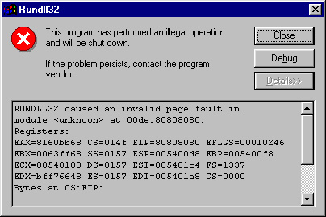

What It Looks LikeWhen you see something like this,
 you probably hit some kind of buffer overflow. Sure the error is somewhat generic looking, but look a little closer at some of those values...
To get this to happen, I fed a string of 0x80 bytes into a popular conference package called 'Microsoft Netmeeting' through the address field of a 'speeddial' shortcut. EIP happens to be 0x80808080. Guess what? That's good! I found a stack overflow! Now all I have to do is craft my exploit string to have some fun code inside, and tweak four of those 0x80 bytes to point to my exploit string.
Note at this point that other types of errors will bring up similar dialog boxes, and that not all of them are buffer overflows. Some buffer overflows are easier to exploit than others as well. I will be going into the mechanics of stack overflows in Windows in this paper. Other types of overflows, such as heap overflows are exploitable, on Intel Win95/98/NT, but are beyond the scope of this paper by about 50 IQ points from the target audience.
Once you're pretty sure that you've found a buffer overflow, you need to decide what approach you're going to take, and find out what tools are available to you.